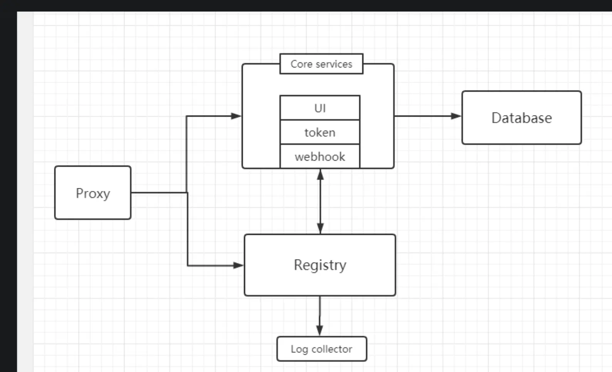
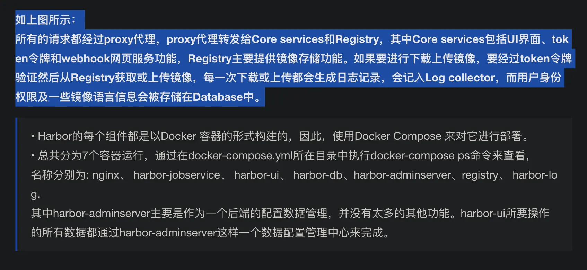

Harbor
AI 导读一分钟导读，先掌握全文主干。
核心观点
- Harbor 是企业级 Docker Registry，2022 年捐赠给 CNCF 后由社区独立维护
- 演示 docker-compose 脚本转发与 common.sh、配置修改，最好在 Linux 机器上部署
- 免费制品管理可参考 Nexus 对比
关键结论与取舍
- 生产建议 Linux 部署；配置项集中在 common.sh
- 2024-2026 更新对齐版本线与安全维护
简介
-
Harbor 最初由 VMware 开源，是企业级 Docker Registry 项目，目标是帮助用户快速搭建可用的私有镜像仓库服务；2022 年捐赠给 CNCF，现由社区独立维护。
-
Harbor 以 Docker 公司开源的 Registry 为基础，提供了图形管理 UI、角色访问控制（RBAC）、AD/LDAP 集成、审计日志（Audit Logging）等企业级能力，并原生支持中文。
-
Harbor 的每个组件都以 Docker 容器形式构建，用 docker compose 统一部署；部署模板位于 harbor/docker-compose.yml。
-
官方最低要求 2 核 4G，生产环境建议 4 核 8G 以上


# 下载离线安装包（版本号以 goharbor.io 发布页为准，2026 年为 v2.13.x 线）
~/Downloads/harbor-offline-installer-v2.13.1.tgz最好在linux机器上
# mac机器出现
ERROR: for portal Cannot start service portal: failed to initialize logging driver: dial tcp 127.0.0.1:1514: connect: connection refused
ERROR: Encountered errors while bringing up the project.docker-compose 脚本转发命令
- docker compose 自带，不必另行安装（2026 年 Docker Engine/Desktop 均已内置 compose v2 插件，此转发脚本仅老环境需要）。
- harbor 安装脚本会检查 docker-compose 命令，所以需要一个转发脚本让它通过检查
vim docker-compose
#!/bin/bash
docker compose $*修改common.sh
# 注释掉dockercompose检查
function check_dockercompose {
return
....
}修改配置
# The IP address or hostname to access admin UI and registry service.
# DO NOT use localhost or 127.0.0.1, because Harbor needs to be accessed by external clients.
hostname: 修改为自定义 IP 或域名
# 根据自己需求来配置 http/https
# http related config
http:
# port for http, default is 80. If https enabled, this port will redirect to https port
port: 80
# https related config
#https:
# https port for harbor, default is 443
# port: 443
# The path of cert and key files for nginx
# certificate: /your/certificate/path
# private_key: /your/private/key/path免费制品管理：Nexus
https://www.sonatype.com/products/repository-oss-download
Harbor 更新（2024-2026）
Harbor v2.11+ 主要更新：
- CNCF 毕业项目：2022 年捐赠给 CNCF，2023 年成为毕业项目，维护主体早已脱离 VMware（被 Broadcom 收购后社区独立运作，版本迭代与安全修复保持稳定）；
- 供应链安全：支持 Cosign 签名验证、SBOM 导出与组件级漏洞扫描，配合准入策略构成 OCI 供应链闭环；
- 制品与复制：支持 OCI Artifact（Helm Chart 等非镜像制品）、Proxy 缓存仓库代理 Docker Hub/镜像站，异地多集群复制成为多云标准姿势；
- 运维体验：机器人账户、Webhook 与审计能力持续改进，内部镜像加速与安全扫描已成为 Kubernetes 集群标配。